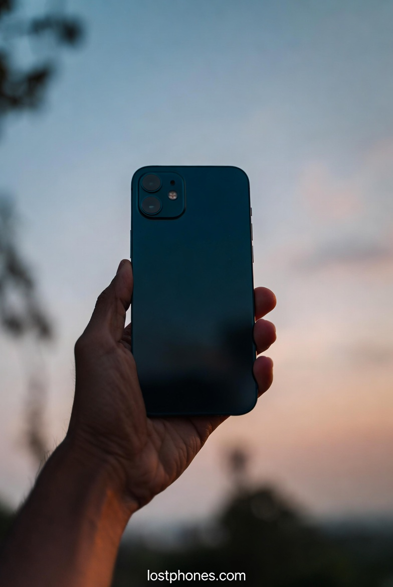
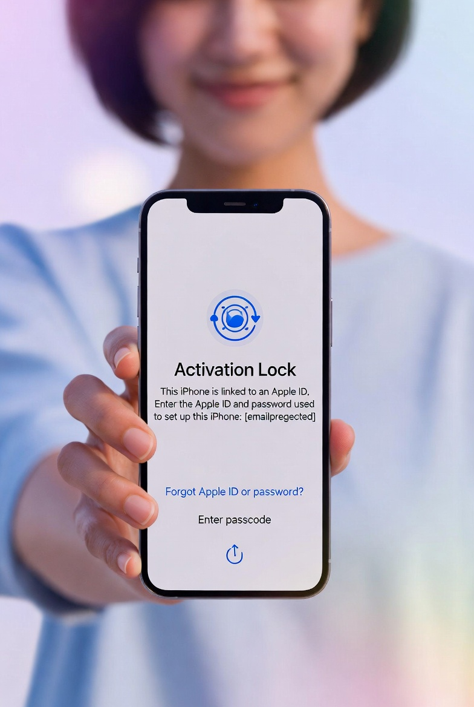
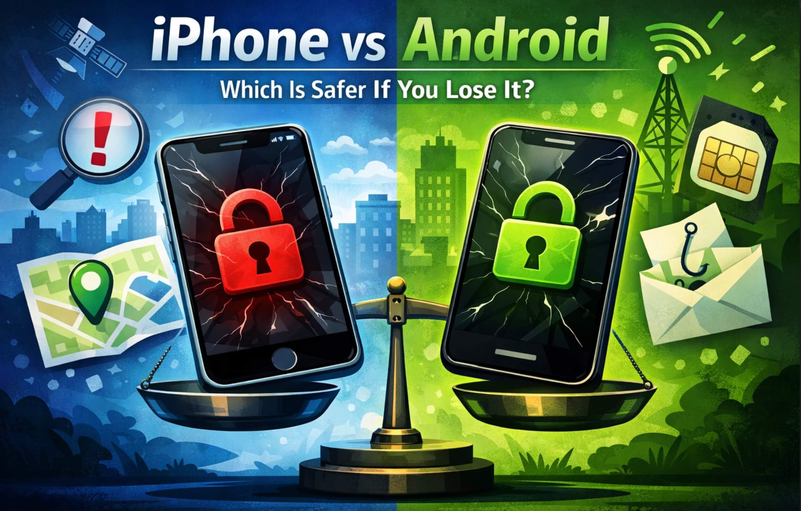
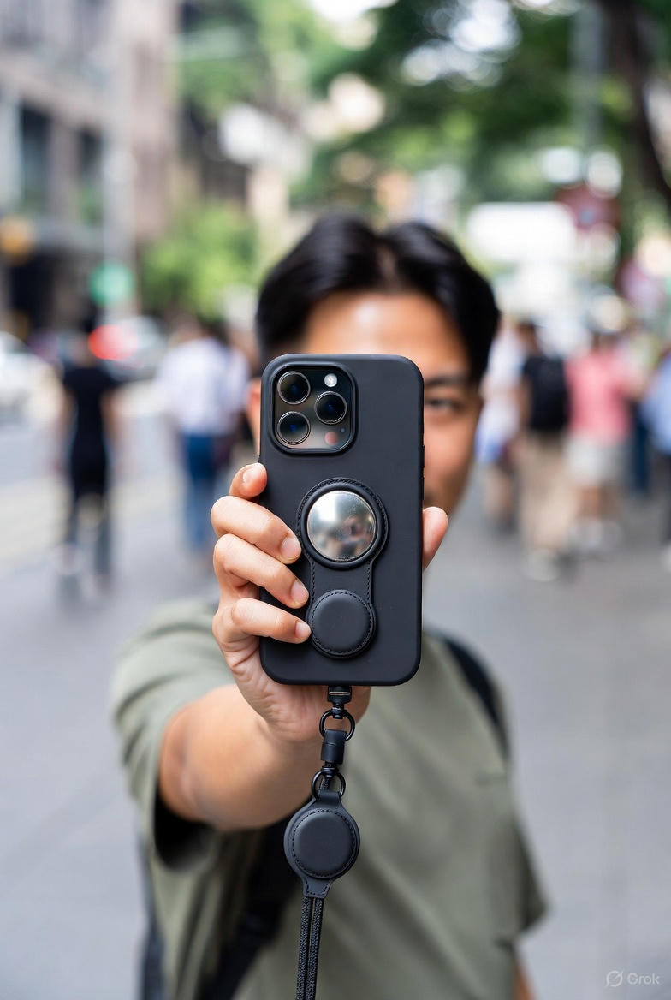
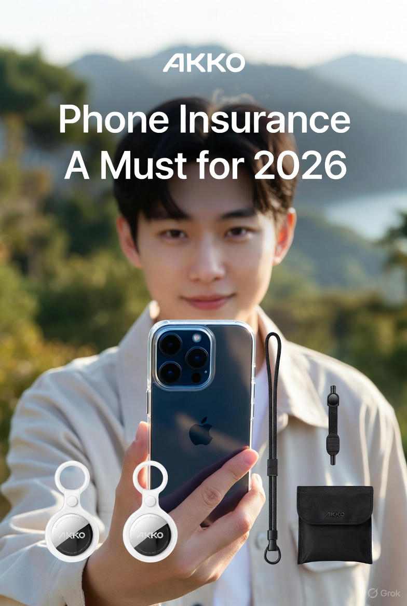
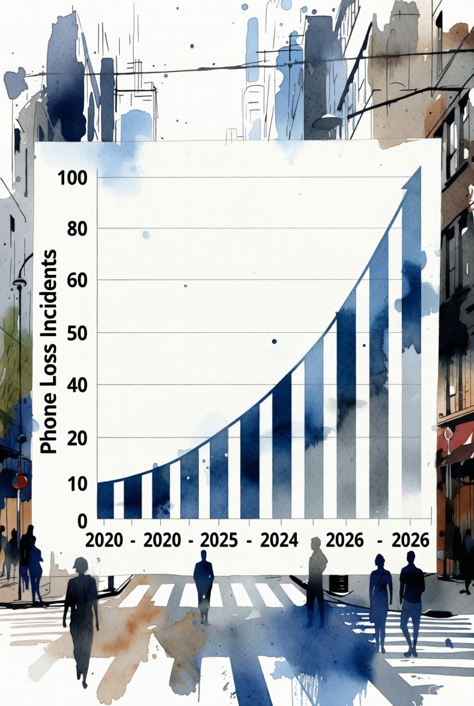

iPhone recovery
What to Do If You Lost Your iPhone
Locate, lock, and protect your information with an immediate step-by-step checklist.
Read the guidePractical help, one step at a time
Start with the situation that matches yours, or prepare now so a future loss is easier to handle.
Find and secure a missing phone
Device-specific checklists and clear steps for common places and situations.
iPhone recovery
Locate, lock, and protect your information with an immediate step-by-step checklist.
Read the guideAndroid recovery
Use Google Find Hub to locate, ring, secure, or erase a supported Android device.
Read the guide
iPhone recovery
Set up Lost Mode, protect your account, and understand what can happen when the phone reconnects.
Read the guideCarrier help
Follow the right steps for Verizon, AT&T, T-Mobile, and other carriers.
Read the guide
Stolen iPhone
Understand Activation Lock and the steps that protect your account and device.
Read the guidePlace-specific recovery
Locate and secure the phone, contact the venue, and protect your information.
Read the guideRide recovery
Track the phone, contact the driver safely, secure your data, and avoid scams.
Read the guideTravel recovery
Search methodically, contact hotel staff, and secure your accounts if it stays missing.
Read the guideEvent recovery
Work with the venue, locate and lock the phone, protect data, and recognize scams.
Read the guideRide recovery
Use the rideshare recovery process and a clear contact script to reach the driver.
Read the guideTravel recovery
Coordinate with TSA, the airline, and airport lost-and-found while securing the device.
Read the guideEvent recovery
Retrace the event, contact the host, locate or lock the phone, and protect your data.
Read the guidePrepare before a loss
Settings, habits, coverage, and context that can reduce risk before your phone goes missing.

Platform comparison
Compare finding tools, device locks, remote erase, and preparation across both platforms.
Read the guide
Everyday prevention
Build practical habits and alerts that make loss less likely and recovery easier.
Read the guide
Coverage
Learn what to look for when comparing coverage and preparing for a claim.
Read the guide
Research & context
A practical look at recovery odds and prevention steps informed by loss trends.
Read the guideTracker setup
See one practical AirTag setup designed to make a misplaced phone easier to recover.
Read the guideNeed help right now?
Answer a few focused questions and start with the safest next step.
Start Recovery